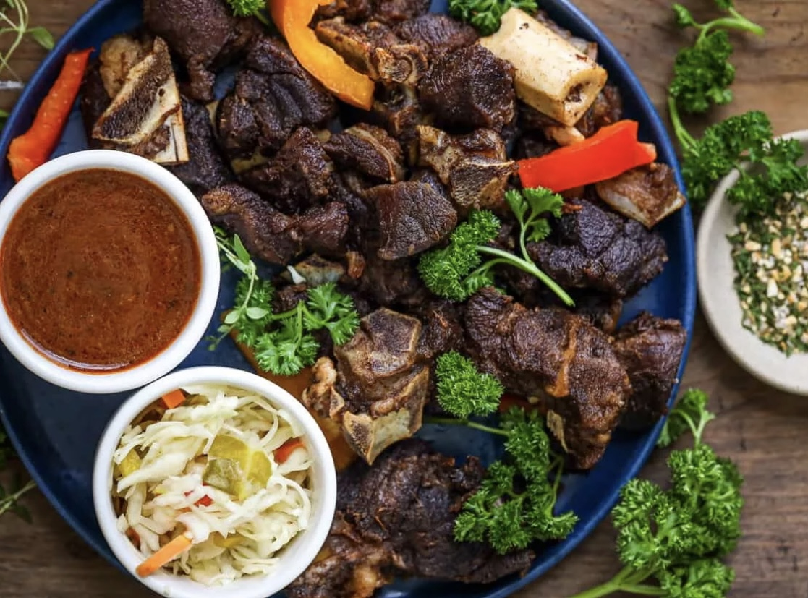

Tassot Carbit (Haitian fried goat)

A Tender and Flavorful Meal!
Tassot Carbit is popular dish in Haitian cusinie. The meal is prepared with simple ingredients
that creat tender and crispy bite-sized meat pieces. Tassot Carbit is often prepared as the main character
of Fritay, an assortment of haitian fried foods.
Ingredients List
- 3 Lbs. of fresh and cleaned goat meat (leg) from a butcher shop
- 3 Sour oranges or limes
- 1 Lemon
- 1 Shallot
- 1 Onion
- 1 Bell pepper
- Fresh parsley
- Garlic
- Vinegar
- 5 Springs of thyme
- Epis
- Kosher Salt
- Goya Adobo
- Dijon mustard
- Ground cloves
- Cayenne pepper
- Tomato paste
- Olive oil
- Canola oil
Steps
Cleaning the Goat
- Remove the fat, blood vessels, skin, and gunk from the goat meat.
- Cut the meat into 2-3 inch sized pieces.
-
- Transfer the meat into a bowl.
- Cut 3 sour oranges into 4 pieces and squeeze the juices from the oranges and rub it into the meat.
- Leave the orange peels in the bowl.
- Add a generous amount of salt to the bowl (roughly 1 1/2-2 tbsp).
- Pour a 1/4 cup of vinegar.
- Transfer the content into a large pot and add water to fully cover at the cover pieces.
- "Shode" the goat by boiling the meat for about 20 minutes to remove all fat and blood from the meat.
- The "shode" process removes the odor and raw meat aftertaste from the goat.
- The goat chunks should now be a dusty greyish-brown color.
- Pour out the boiled water and discard the orange peels. Then thorouhly rinse the chunks with cold water.
Seasoning the Goat
- With goat chunks in a large bowl, add 1 sliced shallot, 4 minced garlic cloves, 4 tbsp. of fresh parsley,
4 tbsp. of Haitian Epis, 2 tbsp. of dijon mustard, juice from 1 lemon, 2 tsp. of kosher salt, 1 tsp. of ground cloves,
and 1 tsp. of cayenne pepper.
- Mix the contents and allow the mixture to marinate overnight.
- Transfer the marinated goat to large pot, add the thyme stems and add water so that all pieces are covered. Set the stove medium-high.
` - Boil meat fot 30 minutes to an hour. Add more water if necessary to ensure that the meat does not dry out.
- Check the goat periodically until the meat is tender.
- Remove the goat from its stock and set it aside. Keep the stock for a seperate sauce.
Frying the Goat
- In a deep fryer, add 4 of canola oil and the oil temperature to 400 degrees.
- Fry the meat in small batches for 2- 4 minutes. Repeat until all the goat pieces are fried.
The Sauce
- In a saucepan, add 1 tbsp. olive oil over medium low heat.
- Add 3 tbsp. of tomato paste. Stir well to comine the ingredients for about 1 minute.
- Add the goat stock to the pan. Stir periodically and allow the sauce to cook on medium low for 8 mintues.
- Add 1 sliced onion and 1 sliced bell pepper to the pan and stir. Allow onion slices to cook for 3 mintues.
- Remove the sauce from the heat and serve it with your tassot carbit.